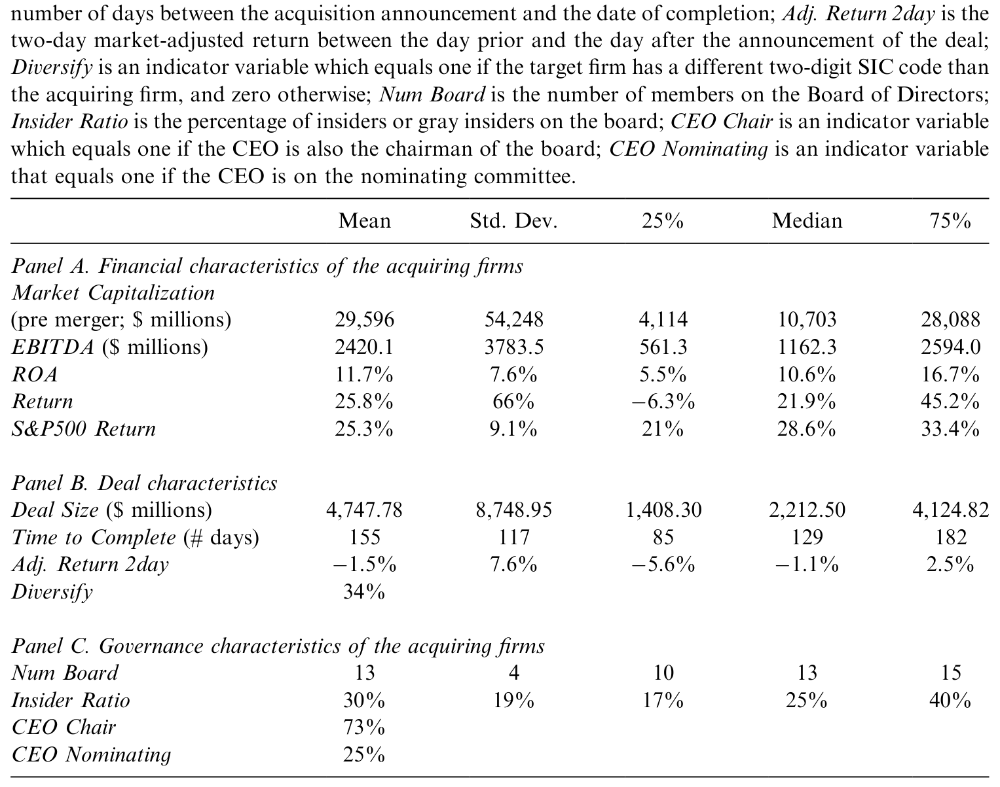
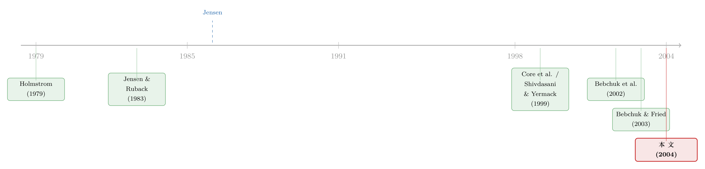

奖金，奖的不是「赚到钱」，而是「说了算」
本文读的是 Grinstein & Hribar (2004, Journal of Financial Economics)：作者翻遍 327 桩美国大型并购的薪酬委员会报告，发现 CEO 完成一笔并购拿到的「并购奖金」，更多地被 CEO 自己对董事会的权力所驱动，而不是被这笔交易的努力、技能，更不是被交易的业绩所驱动。一句话——奖金奖的不是「干得好」，而是「管得住董事会」。
1 一个让人不舒服的对照
先看两组事实，把它们放在一起。
第一组：在最近几桩大型并购里，Exxon、HealthSouth、Bankers' Trust、Travelers Group，都为「成功完成一笔并购」给自家 CEO 发了 500 万到 1400 万美元的现金奖金。完成一笔交易，老板进账几百上千万——听上去顺理成章，毕竟谈判、尽调、整合，哪一样不是辛苦活？
第二组：可几乎所有研究都告诉我们，并购里收购方的股东并不赚钱。Jensen and Ruback (1983) 综述的诸多研究里，收购方的公告期收益普遍不显著为正；更近的 Moeller et al. (2003) 干脆报告说，大型收购方的公告期收益大幅为负，尤其是 1997 年以后的交易（关于这个被「平均数」藏起来的规模效应，可参见《赚了 1.1%，却亏掉 3030 亿：并购里那个被「平均」藏起来的规模效应》）。
于是张力出现了：一边是股东在并购里大概率不赚钱，一边是 CEO 因为完成并购而大赚一笔。 钱从哪儿来，又凭什么发？这就是 Grinstein and Hribar (2004) 想要正面回答的问题。
2 两种解释，掰开来看
要解释这笔奖金，金融学里有两套现成的语言，它们给出的预测截然不同。
第一套是传统的「最优契约」视角。 从 Holmstrom (1979)、Grossman and Hart (1983) 一路下来的道德风险 (moral hazard) 模型说：CEO 干的活儿董事会看不全，所以要把薪酬挂钩到那些「与价值最大化相关、且可观测」的结果变量上。按这套逻辑，如果一笔并购需要更高的技能、更多的努力，CEO 多拿钱是应该的；但更重要的是——奖金应该和交易的「成功」正相关。市场反应好、付的溢价合理，奖金就该高；反之就该低。
第二套是「管理层权力」视角 (managerial power approach)。 Bebchuk et al. (2002) 与 Bebchuk and Fried (2003) 把它讲得最透：CEO 本就有能力影响董事会的决策，包括给自己定薪的决策；于是薪酬契约不必然以股东利益最大化为目标，而往往是 CEO 凭借权力「抽租 (rent extraction)」的产物。但抽租不能太露骨——Bebchuk 他们特别强调，如果股东一眼看穿这是赤裸裸的侵占，就会反抗。所以理性的 CEO 会去找一个「说得过去」的理由给自己发钱。
而一笔并购，恰恰是天底下最好的理由。
这正是全文的「钩子」：并购天然带着「我很辛苦、我很有本事」的叙事外衣。一个想抽租的 CEO，完全可以借这件大事，把一笔本就想发的奖金「正当化」。问题是——我们能不能把「辛苦」和「权力」这两股力量，在数据里分开？
接着，一个自然的问题是：这两种解释并不互斥，真实世界里多半两者都有。作者把目标定得很诚实——不是要二选一地证伪谁，而是去量：横截面上 CEO 之间并购奖金的差异，到底更像「努力/技能/业绩」在解释，还是更像「权力」在解释？
3 数据：把薪酬委员会报告一份份读出来
这篇论文最扎实、也最费力的地方，是它的数据不是「下载」来的，而是「读」出来的。
样本是 1993–1999 年间美国的 327 桩大型并购：交易额在 10 亿美元以上，收并双方都是美国上市公司。交易信息来自 SDC，财务数据来自 Compustat，收益数据来自 CRSP，CEO 薪酬来自 Execucomp。作者把每家收购方在交易前后的委托书 (proxy statement) 都找出来逐字读，从中辨认出哪一部分薪酬是直接和这笔交易绑定的，并手工编码出一系列治理变量。
样本里的公司都是巨头：平均市值 $29.5 billion，中位数约 $10 billion；平均资产收益率 (ROA) 11.7%；平均交易额 $4.747 billion，中位 $2.212 billion（这巨大的均值-中位差，说明几笔超大交易把分布拉偏了，比如 Exxon-Mobil 那桩 $78.9 billion）；从公告到完成平均要 155 天，约五个月；公告期两日市场调整收益 -1.5%。治理上：董事会平均 13 人，内部人比例 30%，73% 的公司 CEO 兼任董事长，25% 的公司 CEO 进了提名委员会。

Table 1: presents the summary statistics of our sample. Acquiring firms in our
这些治理特征和此前文献报告的 S&P 500 样本相当接近——Shivdasani and Yermack (1999) 报告 1994 年董事会平均 11.4 人、32.5% 的 CEO 在提名委员会、83.6% 兼任董事长——这让我们相信，这 327 家公司不是什么特殊的「坏样本」。
4 第一步：这笔奖金，真的是「额外」给的吗？
在解释奖金为什么有高有低之前，作者先要回答一个更基础、也更要命的问题：薪酬委员会嘴上说「我们为这笔并购发奖金」，会不会只是「事后贴标签 (ex post labeling)」——奖金本来就要发，只是顺手把并购写成了理由？
如果是这样，那后面所有分析都建立在沙子上。
于是作者用整个 Execucomp 样本（1993–1999，与 Compustat 匹配，7,334 个观测）跑了一个带固定效应的回归：
这里识别的逻辑很干净：AcquisitionDummy 在控制了一大堆业绩变量和公司/年份固定效应之后，捕捉的就是「并购年」相对于「非并购年」、同一家公司奖金的那一截跳升。
结果（见 Table 3）：AcquisitionDummy 的系数是 189.09，t 值 2.30，显著为正。也就是说，哪怕已经控制了业绩和固定效应，完成并购这一年的奖金还是平均高出一截。控制变量也都符合直觉：Size 系数 0.0083（t = 8.03）、ROA 系数 1138.61（t = 4.48）、Return 系数 34.78（t = 2.20），调整后 R² 高达 68.3%。
但真正关键的一步在于排除「替代效应」：会不会奖金涨了，只是因为工资或期权减了，总薪酬没变？作者把被解释变量换成「奖金 + 工资」再跑一遍，AcquisitionDummy 系数 185.69（t = 2.22），依旧显著为正——没有此消彼长。再把被解释变量分别换成「只有工资」和「其他形式薪酬」，AcquisitionDummy 都不显著。
这就把第一个问号摁死了：并购奖金是真金白银的额外补偿，而且几乎全以现金奖金的形式发放。 一个更直观的画面来自 Fig. 1：对全样本而言，奖金占基本工资的比例在交易前两年是 130%，交易当年跳到 184%，两年后回到 174%；而对那些明确声称「为并购发奖」的公司，这个比例从交易前两年的 156% 飙到交易当年的 272%，两年后又落回 186%——一个清晰的、围绕交易年的「驼峰」。
5 反转：奖金和业绩，竟然是负相关的
地基打好了，现在回到那个核心问题：横截面上，是什么在解释 CEO 之间并购奖金的高低？
按传统契约视角，应该看到三件事：奖金与「交易复杂度/努力」正相关；与「技能」正相关；尤其是——与「交易成功」正相关。
前两件，数据给了部分支持：交易越大、耗时越长、并购当年董事会开会次数越多，奖金越大。这些确实像「努力和技能」的回报。
可第三件——也是契约理论最该成立的那一件——却落空了，甚至反了过来。衡量交易成功的变量，比如并购公告的市场反应、为目标支付的溢价，都不能解释奖金的横截面差异；作者甚至发现一些证据表明它们与奖金负相关。 干得越「好」（市场越买账），奖金反而没更高、甚至更低。这是个让契约论很难自圆其说的反转。
那么，把「权力」加进来呢？效果立竿见影。
在那些声称发并购奖金的公司里：进了提名委员会的 CEO，平均多拿 $1.408 million；兼任董事长的 CEO，平均多拿 $1.447 million。 提名委员会是提议新董事人选的地方，掌握它就掌握了「谁能进董事会」；兼任董事长则意味着掌控议程与信息流——Jensen (1993)、Bebchuk et al. (2002) 都强调，正是这两条让 CEO 能够左右董事会。权力变量显著提升了对奖金差异的解释力。
而权力的代价，写在股价里：权力最高那一组 CEO 的公司，并购公告两日收益是 -3.8%，约为其余收购方的三倍之低。 市场不傻——它对「权大者」发起的交易，反应明显更负面。
把这几块拼起来：权力大的 CEO 拿更高的奖金，做相对自家公司更大的交易，而市场对这些交易的反应更差。这正是 Jensen (1986) 自由现金流假说里那个「做大规模本身就是代理问题的产物」的活样本（这条主线，见《现金为什么一定要「还」出去？——四十年后，重读 Jensen 的自由现金流》）。
6 委员会自己的「供词」
如果上面还嫌是计量推断，作者还留了一手最朴素、却也最有说服力的证据：直接看薪酬委员会自己写了什么。
按 SEC 的 Regulation S-K（402 条），公司必须披露薪酬政策、说明 CEO 薪酬究竟基于哪些业绩指标。可现实是：在 125 家把「完成交易」列为发奖理由的公司里，只有 64 家（51%）给出了更详细的解释。而在这 64 家里，最常被提到的动机是——「公司规模和收入的扩大」（36 家），其次是 CEO 的努力与技能（27 家）；真正声称「价值提升」是发奖理由的，只有 22 家。
把 Table 2 的数字摆出来更刺眼：当并购是奖金的「唯一理由」时（7 例），平均交易额 $32.27 billion、平均奖金 $5.5 million；当它是「理由之一」时（118 例），平均交易额 $5.41 billion、奖金 $2.2 million；当并购「未被列为理由」时（162 例），交易和奖金都更小（$3.589 billion 与 $1.29 million）。奖金的高低，紧紧地跟着「交易规模」走，而不是跟着「交易给股东创造的价值」走。
委员会自己的供词，和回归结果指向了同一个方向：这笔钱，奖的是「把盘子做大」，不是「把价值做高」。
7 文献脉络
这条研究是两股文献在一桩具体事件上的交汇。
一股是高管薪酬的理论之争。 一端是从 Mirrlees (1974, 1976)、Holmstrom (1979)、Grossman and Hart (1983) 发展出的最优契约/道德风险理论——薪酬是为对齐激励而设计的。另一端是逐渐积累的「反例」：Blanchard et al. (1994) 发现公司拿到与业绩无关的现金横财后会给 CEO 加薪，Yermack (1995, 1997) 发现期权的授予并不最优、且 CEO 会择时。这些反例最终被 Bebchuk et al. (2002) 与 Bebchuk and Fried (2003) 收拢成系统的「管理层权力」框架。
另一股是薪酬与权力、薪酬与并购的实证。 Hallock (1997)、Core et al. (1999)、Cyert et al. (2002) 反复发现：兼任董事长、对董事人选有影响力的 CEO 拿得更多。Denis et al. (1997)、Datta et al. (2001)、Bliss and Rosen (2001)、Rose and Shepard (1997) 则把薪酬和并购/多元化联系起来，但他们看的多是交易「之前」的薪酬与持股结构。Hartzel et al. (2001) 确实盯住了并购相关的薪酬——但看的是目标公司CEO（这条线上，可参见《最后一分钟的两百万股期权：当目标公司 CEO 在谈判桌底下「自己给自己发薪」》）。

而 Grinstein and Hribar (2004) 正好补上了缺口：第一次系统地、用手工编码的委员会报告，研究收购方CEO 因「完成交易」而拿到的那笔奖金，并把它判给了「权力」而非「业绩」。它和后来研究「强势 CEO」的工作（如《老板说了算的公司，业绩为什么忽好忽坏？》）一脉相承。
8 评论与延伸（Q&A + 研究方向）
(a) 几个可能的疑问
Q：「权力大的 CEO 拿更多奖金」会不会只是因为他们更能干、所以掌权也理所应当？
这是最该担心的内生性。作者的反驳力度在于「业绩」这一刀：如果是能力解释一切，能干的 CEO 应当带来更好的交易，奖金应当与公告收益正相关。但数据里两者不相关、甚至负相关，而权力最高组的公告收益是
-3.8%。能力假说很难解释「越有权、市场越不买账、奖金却越高」这个组合。
Q：交易规模（deal size）能强烈解释奖金，这难道不正是「努力和技能」吗？大交易当然更累。
作者自己承认 deal size 是把双刃剑——它确实可能装着努力和技能。但他们指出：权力最高的 CEO，恰恰有最高的「目标/收购方」规模比。也就是说，做大交易这件事本身，可能就是 Jensen (1986) 式代理问题的表现，而非纯粹的努力。规模与权力在这里是纠缠的，这削弱了「规模 = 努力」的纯洁解释。
Q：会不会是「事后贴标签」——奖金本来就要发，并购只是顺手写上的借口？
作者用整个 Execucomp 样本、控制业绩与公司/年份固定效应后，
AcquisitionDummy系数189.09（t =2.30）显著为正，且换成「奖金+工资」仍显著、换成「仅工资」不显著，排除了与其他薪酬的替代。这说明并购年的奖金确是额外增量，不只是改了个名目。当然，「为什么发」的归因仍有标签空间，这正是 Table 2 委员会供词补强的地方。
Q：样本只有 327 桩、且都是 10 亿美元以上的巨型交易，结论能外推到中小并购吗？
不能直接外推，这是边界。作者选大交易是因为它们经济意义大、更可能直接影响薪酬，且能用 Execucomp。但「权力驱动奖金」的机制在中小交易、未上市收购方那里是强是弱，本文没回答——很可能更弱，因为小交易缺少「正当化」叙事的分量。
Q：标准误是怎么处理的？这些治理变量会不会有遗漏变量？
全样本回归带了公司与年份双向固定效应，并明确控制了规模与异方差；作者还说明剔除五桩最大交易（均 >
$40 billion）后结论不变。但横截面薪酬回归里，治理变量是手工编码的、可能与未观测的公司文化/董事会质量相关，这类遗漏变量是诚实该承认的残余担忧。
Q：市场对高权力 CEO 交易反应更差，会不会是这些公司本来质量就差，而非「权力」本身？
这是因果链上最薄的一环。本文是横截面相关性证据，无法完全分离「权力」与「公司质量」。它更像是把一组互相印证的相关性（高权力 → 高奖金 → 大交易 → 差反应）摆在一起，让「权力抽租」成为最简洁的统一解释，而非一个干净的因果识别。
(b) 几个可能的研究问题与提案
1. 并购奖金与发债成本——债权人会不会替股东「报警」？
【经济故事】既然权力大的 CEO 倾向于做毁灭价值的大交易，债权人理应在事前或事后要价。若并购奖金（尤其「唯一理由」型）预示着更高的违约风险，公司债利差、新发债的信用利差应当对此有反应。 【可行性】中。需要把本文式的手工编码薪酬委员会数据，与 TRACE/Mergent 债券数据、CDS 利差匹配。识别上可用同一发行人在并购公告前后的利差跳变做事件研究。样本会因「既有公开债、又有详细薪酬披露」而缩小，是主要障碍。
2. 把「权力」做成连续的内生变量——用 staggered 的反收购立法做冲击。
【经济故事】本文的权力变量（兼任董事长、提名委员会）是横截面的、可能内生。如果有一个外生改变 CEO 权力的冲击，就能更干净地识别「权力 → 并购奖金」。各州反收购法的交错通过，曾被用来外生地改变管理层权力。 【可行性】中。可用交错双重差分，但需警惕近年关于交错 DiD 的方法论批评（见《当「更稳健」的设计悄悄把符号弄反了——重读交错双重差分》）。薪酬-并购匹配样本在更长时段上的可得性是关键约束。
3. 外资股东进来之后，并购奖金会被「管住」吗？
【经济故事】管理层权力假说的核心是「股东监督不足」。如果引入更主动、更不容忍抽租的投资者（如外国机构投资者），并购奖金对权力的敏感度应当下降。这把高管薪酬话题接到了外资持有人与公司治理的交叉口。 【可行性】中偏高。可用 13F/FactSet 的机构持股、以及各国市场开放（如 MSCI 纳入、QFII 额度）作为外资进入的准外生变化，看并购奖金-权力斜率是否随外资持股上升而变平。数据相对成熟，识别靠开放事件的时间差。
4. 文本化薪酬委员会报告——用 NLP 把「贴标签」量出来。
【经济故事】本文靠人工读 64 份详细解释，区分「规模/收入」「努力技能」「价值提升」三类动机。今天完全可以用大语言模型对全样本几千份委员会报告做归因编码，检验「价值类」措辞与真实长期业绩是否名实相符。 【可行性】高。SEC EDGAR 上的 DEF 14A 全文可批量抓取，归因分类是成熟的文本任务。难点在构造「真实业绩」的事后标尺并做好措辞-业绩的因果区分，而非数据可得性。
5. 并购奖金与事后会计操纵——「做大」之后还要「做好看」吗？
【经济故事】既然委员会最看重「规模和收入扩大」，拿了大额并购奖金的 CEO 是否更有动机在并购后操纵盈余来支撑叙事？这把薪酬激励、并购与盈余管理串成一条链。 【可行性】中。可用应计利润 (accruals) 度量盈余管理，匹配并购奖金样本（相关方向见《财报里那点「虚」，藏在并购方三年后的股价里》）。识别需处理「权力」与「操纵倾向」的共同驱动，否则只是又一组相关性。
9 我的判断
这篇论文的贡献，不在于多花哨的计量，而在于它选了一个极其干净的检验场景：并购是一次性的、可观测的、有明确成功度量（公告收益、溢价）的大事件。如果薪酬真是为对齐激励而设，没有比并购更该看到「奖金挂钩业绩」的地方了——可偏偏在这里，业绩与奖金不相关甚至负相关，而权力与奖金强相关。这种「最该成立却不成立」的设计，比一万个显著系数都更有说服力。手工读完 327 份委托书、再让委员会自己的措辞来背书，是这篇文章最朴素也最硬的功夫。
对识别，我保持两点清醒。其一，本文终究是横截面相关性：高权力、高奖金、大交易、差反应，是一组互相印证的关联，而非一条被外生冲击打通的因果链；「权力」与「公司本就质量差」始终难以彻底分开。其二，deal size 这把双刃剑没有被完全驯服——它既可能是努力，也可能是抽租，作者诚实地承认了这一点，但没能从数据里把两者切干净。
后续我最想看到的，是把这里的「权力」从一个静态的横截面标签，变成一个被外生冲击推动的、可识别的变量——无论是反收购立法、还是外资股东的进入。如果在 CEO 权力被外生削弱之后，那 $1.4 million 的「权力溢价」真的缩水了，「管理层权力驱动并购奖金」才算从一个令人信服的故事，变成一个被钉死的因果结论。
参考文献
- Bebchuk, L. A., Fried, J. M. (2003). Executive compensation as an agency problem. Journal of Economic Perspectives 17, 71–92.
- Bebchuk, L. A., Fried, J. M., Walker, D. I. (2002). Managerial power and rent extraction in the design of executive compensation. The University of Chicago Law Review 69, 751–846.
- Blanchard, O. J., Lopez-de-Silanes, F., Shleifer, A. (1994). What do firms do with cash windfalls? Journal of Financial Economics 36, 337–360.
- Bliss, R. T., Rosen, R. J. (2001). CEO compensation and bank mergers. Journal of Financial Economics 61, 107–138.
- Core, J. E., Holthausen, R. W., Larcker, D. F. (1999). Corporate governance, CEO compensation, and firm performance. Journal of Financial Economics 51, 371–406.
- Cyert, R., Kang, S., Kumar, P. (2002). Corporate governance, takeovers, and top-management compensation: theory and evidence. Management Science 48, 453–469.
- Grinstein, Y., Hribar, P. (2004). CEO compensation and incentives: Evidence from M&A bonuses. Journal of Financial Economics 73, 119–143.
- Grossman, S., Hart, O. (1983). An analysis of the principal-agent problem. Econometrica 51, 7–45.
- Hallock, K. F. (1997). Reciprocally interlocking boards of directors and executive compensation. Journal of Financial and Quantitative Analysis 32, 331–344.
- Hartzel, J., Ofek, E., Yermack, D. (2001). What's in it for me? CEOs whose firms are acquired. Unpublished working paper, New York University.
- Holmstrom, B. (1979). Moral hazard and observability. Bell Journal of Economics 13, 234–340.
- Jensen, M. C. (1986). Agency costs of free cash flow, corporate finance, and takeovers. The American Economic Review 76, 323–329.
- Jensen, M. C. (1993). The modern industrial revolution, exit, and the failure of internal control systems. Journal of Finance 48, 831–880.
- Jensen, M. C., Ruback, R. (1983). The market for corporate control: the scientific evidence. Journal of Financial Economics 11, 5–50.
- Moeller, S. B., Schlingemann, F. P., Stulz, R. M. (2003). Do shareholders of acquiring firms gain from acquisitions? Working Paper #2003-4, Ohio State University.
- Shivdasani, A., Yermack, D. (1999). CEO involvement in the selection of new board members: an empirical analysis. Journal of Finance 54, 1829–1853.
- Yermack, D. (1995). Do corporations award CEO stock options effectively? Journal of Financial Economics 39, 237–269.
- Yermack, D. (1997). Good timing: CEO stock option awards and company news announcements. Journal of Finance 52, 449–476.